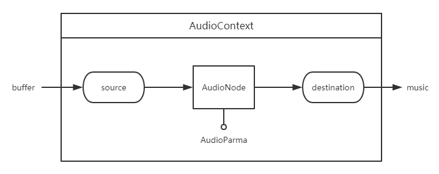
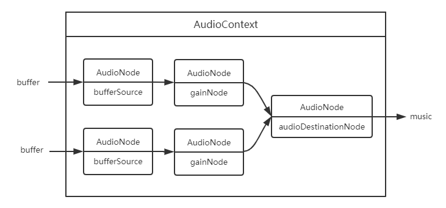
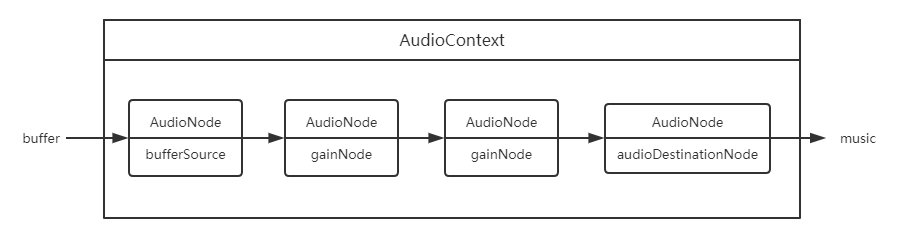

AudioNode
HTML5 音频 API 的主要框架和工作流程如下图，在 AudioContext 音频上下文中，把音频文件转成 buffer 格式，从音频源 source 开始，经过 AuidoNode 处理音频，最好到达 destination 输出音乐。这里形成了一个音频通道，每个模块通过 connect 方法链接并传送音频。
AudioContext
通过全局的 AudioContext 能获取当前网页音频上下文。
let audioContext = new (window.AudioContext || window.webkitAudioContext)();
属性
| 属性 | 说明 |
|---|---|
| destination | 返回 AudioDestinationNode 对象，表示 AudioContext 中所有节点的最终节点，一般表示音频渲染设备。 |
方法
| 方法 | 说明 |
|---|---|
| createBufferSource() | 创建一个 AudioBufferSourceNode 对象，他可以通过 AudioBuffer 对象来播放和处理包含在内的音频数据。 |
| createGain() | 创建一个 GainNode，它可以控制音频的总音量。 |
| createBiquadFilter() | 创建一个 BiquadFilterNode，它代表一个双二阶滤波器，可以设置集中不同且常见滤波器类型：高通、低通、带通等。 |
| createOscillator() | 创建一个 OscillatorNode，它表示一个周期性波形，基本上来说创造了一个音调。 |
音频转换成 Buffer 格式
使用 decodeAudioData() 方法把音频文件编译成 buffer 格式。
function decodeAudioData(audioContext, url) {
return new Promise((resolve) => {
let request = new XMLHttpRequest();
request.open('GET', url, true);
request.responseType = 'arraybuffer';
request.onload = () => {
audioContext.decodeAudioData(request.response, (buffer) => {
if (!buffer) {
alert('error decoding file data: ' + url);
return;
} else {
resolve(buffer);
}
});
};
request.onerror = function () {
alert('BufferLoader: XHR error');
};
request.send();
});
}
let buffer = decodeAudioData(audioContext, './sounds/music.mp3');
AudioNode
音频节点接口是一个音频处理模块。包括音频源，音频输出，中间处理模块。
方法
| 方法 | 说明 |
|---|---|
| connect() | 链接两个 AudioNode 节点，把音频从一个 AudioNode 节点输出到另一个 AudioNode 节点，形成一个音频通道。 |
| disconnect() | 把 AudioNode 节点与其他节点断开链接。 |
AudioBufferSourceNode
音频源有多种，这里只介绍 buffer 的音频源，buffer 的音频源通过 AudioContext 接口的 createBufferSource 方法来创建。音频源节点继承 AudioNode 音频节点。
let bufferSource = audioContext.createBufferSource();
创建了 AudioBufferSourceNode 对象后，把 buffer 格式的音频数据赋值给 AudioBufferSourceNode 对象的 buffer 属性，此时音频已经传递到音频源，可以对音频进行处理或输出。
bufferSource.buffer = buffer;
方法
AudioBufferSourceNode.start(when[, duration])
开始播放。
- when：延迟播放时间，单位为秒。
- offset：定位音频到第几秒开始播放。
- duration：从开始播放结束时长，当经过设置秒数后自动结束音频播放。
AudioBufferSourceNode.stop([when])
- when：延迟停止时间，单位为秒。
停止播放，注意调用该方法后，无法再次调用 AudioBufferSourceNode.start 播放。
AudioDestinationNode
音频终点是通过 AudioContext 接口的 destination 属性访问的。音频终点继承 AudioNode 音频节点，
AudioDestinationNode 节点无法再把音频信息传递给下一个音频节点，即无法再链接其他音频节点，因为他已经是终点，没有输出，也可以理解为他自己就是输出。
let audioDestinationNode = audioContext.destination;
此时我们有音频起点 AudioBufferSourceNode 和音频终点 AudioDestinationNode ，使用 AudioNode.connect() 方法把起点和终点链接起来，就形成了一条有输入输出的音频通道，可以把音频直接播放出来。
bufferSource.connect(audioDestinationNode);
戳我看栗子点击预览。
GainNode
用于音量变化。它是一个 AudioNode 类型的音频处理模块。
let gainNode = audioContext.createGain();
把音频源、音频输出和音频处理模块链接一起，形成可控制音量大小的音频。
bufferSource.connect(gainNode);
gainNode.connect(audioDestinationNode);
let controlVolume = value => {
gainNode.gain.value = value);
}
// 两倍音量播放
controlVolume(2);
戳我看栗子点击预览
BiquadFilterNode
表示一个简单的低频滤波器，可控制声调。它是一个 AudioNode 类型的音频处理模块。
let filterNode = audioContext.createBiquadFilter();
输出一个变调的音频：
bufferSource.connect(filterNode);
filterNode.connect(audioDestinationNode);
let controlFrequency = function (value) {
filterNode.frequency.value = value;
};
// 音频为1000变调
controlFrequency(1000);
多个音频源
在一个音频上下文中，可以有多个音频处理通道，即多个音频源同时输出。各个音频处理通道内的操作是独立的，不影响其他音频通道。
戳我看栗子点击预览
多个音频处理模块
一个音频源可以经过多个音频处理模块处理，音频处理模块叠加效果后输出。
